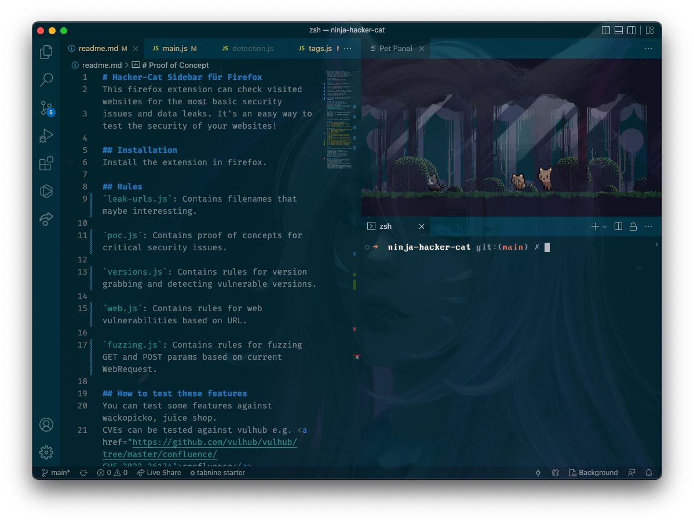

Projekte, Projekte, Projekte. Diese Idee war erstaunlich gut: Wie kann man Webseiten auf Sicherheitslücken testen und das für viele Menschen einfacher machen? Mit einer Browser-Erweiterung: Eine Browser-Erweiterung, die automatisch verschiedene Tests durchführt. Also den Twitch-Stream angeworfen und den hübschesten Texteditor aller Zeiten gestartet. Ja, ich habe jetzt auch eine Katze in meinem Code-Editor. Weil... KATZE!
Einfache Sicherheitslücken, lassen sich relativ gut auch automatisch erkennen. Das bringe ich meiner Hacker-Katze nun bei. Wenn sich die Version der Web Anwendung herausfinden lässt, kann ich auch anhand der Version vor Lücken warnen. Dazu überprüft die Katze die Version oder macht direkt das Proof of Concept.
Der Fokus liegt (wie immer) auf kritischen Sicherheitslücken. Alles was bekannt ist und aktiv ausgenutzt wird. Alle Lücken, die auch für Massenhacks in Frage kommen. Wovor ich nicht warne: Eventuell, wenn Vollmond ist und die Anwendung an einem Samstag auf Windows 98 installiert wurde, könnte eine Sicherheitslücke entstehen...
Ich wollte etwas bauen, was einfach zu bedienen ist und nicht abhängig von irgendeinem Dienst (wobei sich das optional noch erweitern lässt). Dinge, wie Proxyshell, die kritische Lücke in den Microsoft Exchange Servern. Die lässt sich damit erkennen, wenn man mit der Erweiterung auf die Weboberfläche geht.
Unterstützung des Projekts:
https://ko-fi.com/leetcore
Code auf GitHub:
https://github.com/Leetcore/ninja-hacker-cat
Firefox Erweiterung:
https://addons.mozilla.org/en-US/firefox/addon/ninja-hacker-cat/